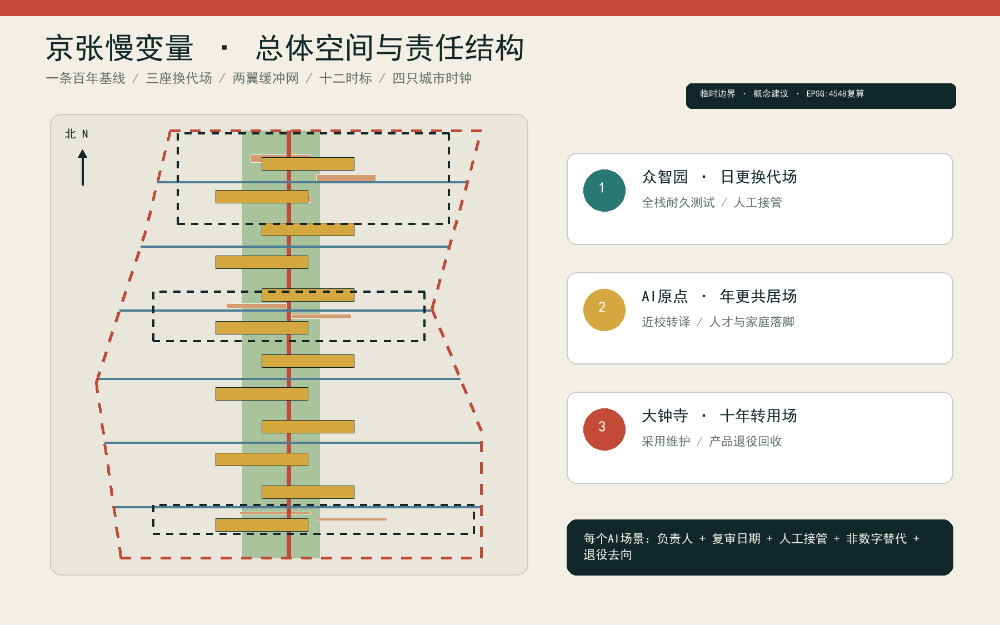
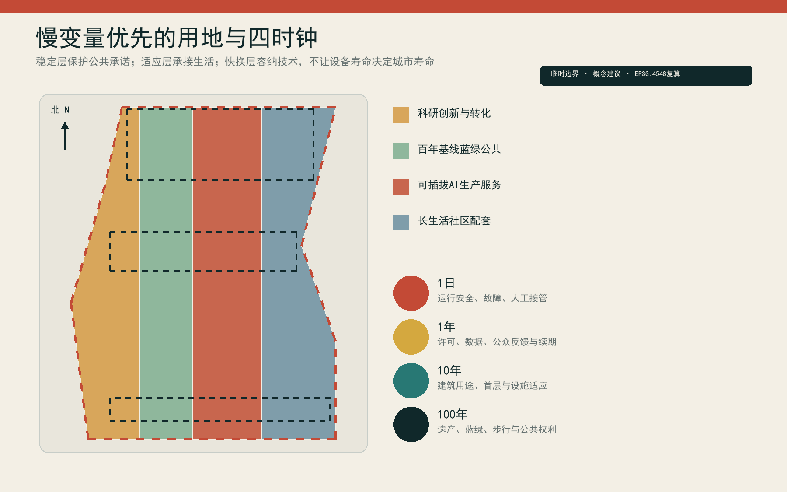
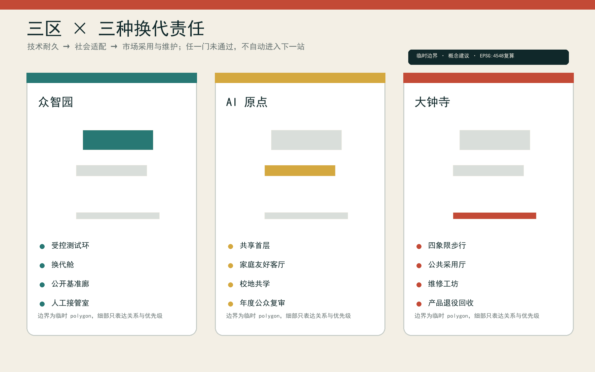
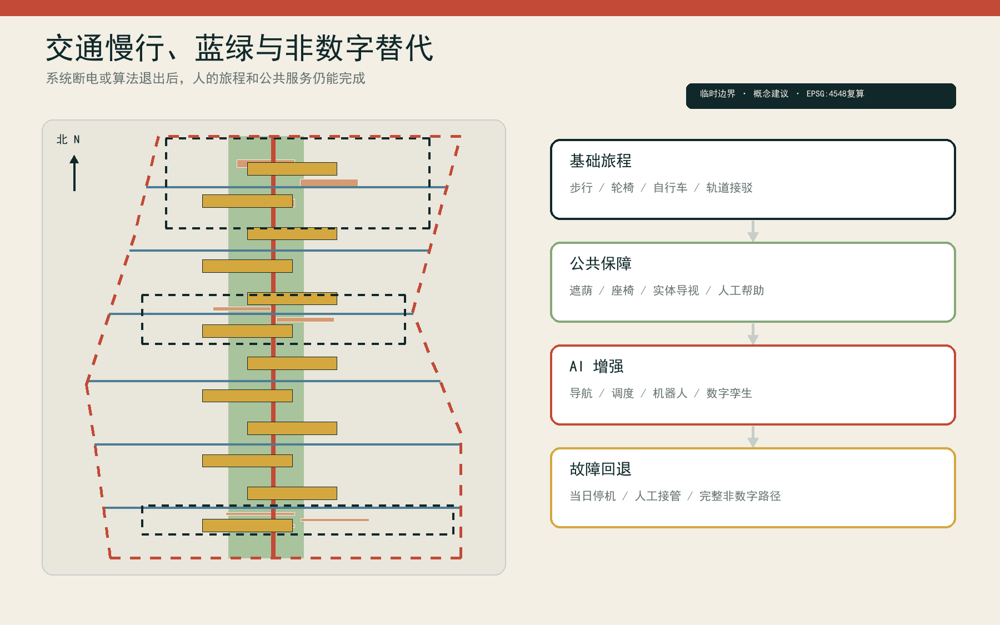
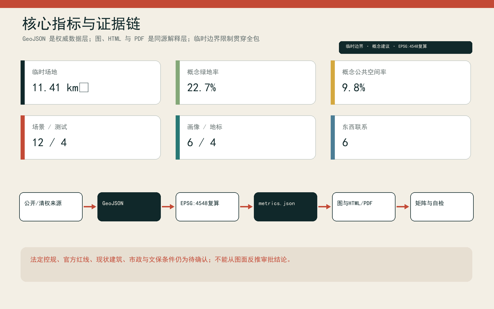

京张慢变量 / JING-ZHANG SLOW VARIABLES：快技术，长生活
以一条百年基线、三座换代场、两翼缓冲网和十二个时标，把遗产、蓝绿、步行、公共权利与人才长期生活设为慢变量，把AI设施设为可插拔、带复审日期、可人工接管和可退役的快变量。
京张慢变量 / JING-ZHANG SLOW VARIABLES
快技术，长生活。 模型可以按周换代，城市不能按周推倒重来。京张慢变量把百年铁路的耐久、日常生活的连续和 AI 的快速试错分层组织：慢层守住遗产、蓝绿、步行、可负担的公共生活与人的选择权；快层容纳模型、机器人、传感器和活动的迭代。每个 AI 场景必须带着“复审日期、责任人、人工接管、非数字替代、退役去向”五件套进入城市。
设计依据与资料清单
本方案以项目仓库的正式公告摘录、面向智能体任务书、公开来源登记和专业标准为主证据层。公告确定三层工作范围、三处重点区域及任务深度，面向智能体任务书确定三大定位、五大功能与 agent.1-agent.6 六项必答；住建、自然资源领域文件只提供原则与分类语言，不生成本项目尚未公布的控规指标。来源 标准
当前可用空间底图是仓库于 2026-06-05 登记、2026-08-07 核查的临时粗略 polygon。它依据公告文字四至和公告约面积拟合，仅适合本次 intake 的概念生成、图面表达和相对面积复算；它不是官方红线，也不能证明道路、宗地、产权、文保或工程边界。方案将该限制写入所有图、指标、假设和图纸，official polygon 到位后应整包替换并重算。来源 空间数据
资料分为三档：A0/正式可用资料支撑项目任务、名称和原则；provisional 资料仅支撑临时几何；全球案例和海淀公开材料仅支撑机制比较与背景。所有外部案例只做事实性引文和机制提炼，不复制地图、照片、Logo 或版式。由于官方建筑现状、控规、市政、权属、交通断面和文保控制范围尚缺，本方案只提交可复算的概念空间骨架和专业深化接口。深度 来源

三层范围工作框架
三层范围不是同一张图放大三次，而是三种不同责任。43.6 平方公里统筹研究范围回答“海淀的高校、科研、资本、场景和生活如何形成长期生态”；约 11.4 平方公里总体设计范围回答“公共脊、用地、慢行、蓝绿、更新项目怎样互相支撑”；368.4 公顷重点区域范围回答“众智园、AI 原点、大钟寺各自先做什么、谁维护、何时复审”。公告面积是任务依据，提交 polygon 的 11,412,825 平方米仅是 EPSG:4548 下的临时复算值。来源 指标
| 层级 | 公告规模 | 本方案职责 | 交付深度 | 数据状态 |
|---|---|---|---|---|
| 统筹研究范围 | 43.6 km² | 产业链、人才生活、全球联系与治理制度 | 战略研究 | 仅文字四至与公告面积 |
| 总体设计范围 | 11.4 km² | 百年基线、双翼缓冲、用地与更新系统 | 控规深度城市设计的概念接口 | 临时 polygon |
| 三处重点区域 | 368.4 ha | 三座换代场与可实施项目包 | 规划综合实施方案的概念接口 | 三处临时 polygon |
替换机制是本方案的组成部分：官方边界到位后，先替换 site_boundary 和 key_areas，再裁切土地分区、建筑概念基底、道路、绿地、公共空间与分期层，随后在 EPSG:4548 复算面积和比例，最后重出五张图、HTML 与两套图纸。任何几何变化都必须触发指标与矩阵复核，不允许只换封面图。深度 空间数据
本轮空间判断只讨论相对关系：连续公园脊应保持公共性，东西联系优先于封闭园区，三处重点区形成差异化试验链，生活服务不得被产业单一化挤出。具体容积率、高度、建筑密度、退线、道路红线和建设规模全部记为待官方资料核定，而非以算法补齐。标准

统筹研究范围产业与未来城市研究
总体概念是“京张慢变量”，口号为“快技术，长生活”。品牌不是把铁路画成芯片，而是用一条连续深色线代表百年遗产与公共承诺，用一条分节朱红脉冲代表可更换技术；两线在圆形“时标”相交。名称系统依次为“一条百年基线、三座换代场、两翼缓冲网、十二个时标、四只城市时钟”。字体使用系统无衬线字，图形和色板均为本次原创，不嵌入企业标识或第三方图像。来源 深度
三大定位保持不变，但通过时间尺度建立联系：百年京张文化带负责记忆不断线，都市 AI 生活体验带负责日常服务不断线，AI 融合创新带负责研究—验证—采用—维护—退役的责任不断线。五大功能分别落到全栈自主创新的“日更测试”、世界级生态的“年更协作”、AI+场景的“有期限试用”、智能活力城市的“昼夜共享”、AI 治理话语权的“公开复审”。三区两翼因此不是五个孤岛：中关村科技服务翼输入人才、资本、法务和知识产权服务，小月河场景赋能翼输入真实需求与反馈，三处换代场按技术、社会、市场三个门逐步放行。标准
全球对标不复制形态，只迁移机制：巴塞罗那 22@ 提醒产业更新要同时配置住房、公共服务和绿轴；伦敦 King’s Cross 说明铁路遗产、大学和长期统一治理可以共生；纽约 High Line 的分区工具提示线性公园需要出入口、光照和邻线开发约束；Paris Rive Gauche 与 Urban Lab 提供“片区实施 + 真实环境试验”的组合；赫尔辛基 Kalasatama 证明小额短周期试点可由居民、初创和城市共同定义；新加坡 Punggol Digital District 把大学、产业、数字孪生和区级设施联动；阿姆斯特丹把算法登记、责任、异议和审计放进全生命周期；蒙特利尔 Mila 展示非营利研究枢纽如何连接开放科学、转化与负责任 AI。来源 来源
由此形成“慢变量创新生态”：科研成果先在众智园进行受控技术换代，再到 AI 原点接受居民、学生和运营人员的社会换代，最后到大钟寺完成市场与维护换代；每次跨站都提交一张“时钟合约”，写明公共价值基线、允许数据、责任主体、复审日期、人工接管、无 AI 等价路径和退役资产。海淀已有的 AI 产业基础提供研究密度，但本方案不把区级备案数量推算为项目范围指标，也不编造企业、投资或产值承诺。来源
总体设计范围城市更新与控规深度城市设计
总体空间结构是“一条百年基线、三座换代场、两翼缓冲网、十二个时标”。百年基线沿遗址公园形成慢行、蓝绿、文化与公共服务连续面；三座换代场分别承担技术耐久、社会适配和市场维护；两翼缓冲网把中关村的专业服务和小月河沿线的生活场景送入主脊，也把居民反馈送回研究端。六条概念横向联系优先处理东西步行、骑行和无障碍连续性，不被表述为新建道路红线。空间数据 深度
概念用地分成四个可复算带：科研创新与转化、百年基线蓝绿公共空间、可插拔 AI 生产服务、长生活社区配套。它们完整覆盖临时总体设计范围，表达功能平衡而非地块权属；其中“稳定层”承担绿地、公共空间、基础步行与非数字服务，“适应层”承担混合功能、可调整首层和共享设施，“快换层”只允许可拆卸设备、短期试验和活动。公共空间与绿地可重叠，因为前者记录公共使用界面，后者记录生态开敞属性。空间数据 指标
城市更新采用“先留、再改、最后才拆”的闸门。没有现状建筑测绘、结构安全、权属和文保资料时，不对任何真实建筑下拆除结论；提交的建筑 polygon 是九个概念性适应模块包络，用于表达可逆隔断、共享首层、设备接驳和维修通道。建筑高度、容积率、密度、日照、消防和停车容量保持 unknown，待专业团队在官方控规与现状调查基础上深化。空间数据 深度
总体风貌不追求“赛博化”。慢层使用耐久、易修复、低眩光材料和连续树荫；快层使用可拆标识、明示状态灯和二维码之外的文字/触觉信息。技术装置不得占用主要无障碍通道，不得遮挡遗产视线，不得用交互屏替代可坐、可走、可喝水、可求助的基础设施。所有建议仍需道路、市政、防洪、消防与文保专业复核。标准
重点区域详细设计
众智园：日更换代场。 定位为全栈自主创新与城市 AI 可靠性首站。临时范围内设置受控低速测试环、模型/端侧设备换代舱、公开基准廊和人工接管室；靠公共脊的一侧只展示通过安全门的成果，深度测试留在可隔离界面。概念建筑以保留或适应性改造优先，新插入模块采用可拆结构并预留检修面。交通上将测试流、物流和公众慢行分时组织；清河、五环及文保条件未核实前不下工程结论。空间数据 深度
北京 AI 原点社区：年更共居场。 定位为近校成果转译与人才“落脚”核心，不只服务创业展示。空间上用共享首层、可预约教室、家庭友好公共客厅、安静工作间和非数字服务窗口连接校园、社区与公园；场景上线前由学生、居民、照护者和一线运营人员共同评审，一年复审后决定续期、缩小或退出。人才公寓、居住比例和校地通道均只作深化方向，须以权属、控规、消防和社区协商为前提。空间数据 来源
大钟寺：十年转用场。 定位为智能原生业态、城市采用和长期维护终站。以地铁站四象限步行连续、首层公共界面、夜间安全和静态交通整理为重点，设置产品退役回收台、公共采用厅和运维培训工坊，让“买到技术”升级为“长期用得住”。商业活动必须保留免费停留、无账户服务和人工窗口；站城一体化、道路改造与停车数量待交通专项和红线资料核定。空间数据 来源
三处换代场共享一张交接单：众智园交付技术边界与故障记录，AI 原点交付使用者反馈与公平性复核，大钟寺交付维护成本、采用条件和退役去向。任何一站未通过，不自动进入下一站。三处范围均为临时 polygon，细部布局只表达关系和优先级；official key-area polygon 发布后，建筑、道路、公共空间、指标和图纸全部重算。来源

AI 创新生态、人才画像与 AI+ 场景
六类画像贯穿全生命周期：初入职青年研究者需要可负担的短住、夜间安全与同伴网络；创业团队需要小规模试验、合规和采购转译；带儿童或照护责任的人才需要托幼、健康导航和可预测时间；长者及残障居民需要无障碍、人工窗口和不被数字排除；一线保洁、安保、运维和服务人员需要培训、接管权与可维护设备；国际开发者与访客需要多语、文化理解和短期驻留。画像不是个人追踪标签，不绑定身份或信用评分。来源
| 卡号 | 场景与类型 | 位置/服务对象 | 最小数据与人工复核 | 到期与非 AI 替代 |
|---|---|---|---|---|
| S01 | 模型到期牌（产业测试） | 众智园；模型团队、采购方 | 版本、用途、基准、责任人；独立评测员签署 | 90 天复审；纸质状态牌与人工台账 |
| S02 | 具身智能低速耐久环（产业测试） | 众智园；机器人团队、行人 | 路段占用与事件日志，不做人脸识别；安全员停机 | 单次许可；普通配送/人工清洁保留 |
| S03 | 城市模型换代舱（产业测试） | 众智园；规划与运维团队 | 合成或清权数据；专业人员核对适用边界 | 每版重测；离线图纸与现场踏勘 |
| S04 | 可解释慢行导航 | 全线；行人、骑行者、残障者 | 路径障碍与开放时段；无障碍顾问复核 | 季度复审；实体导视和人工问询 |
| S05 | 家庭健康服务导航 | AI 原点；家庭、长者 | 用户主动输入，不作诊断；医务/社工转介 | 六个月；电话和窗口服务 |
| S06 | 校地共学助理 | AI 原点；学生、居民、研究者 | 公开课程与预约信息；教师最终确认 | 学期复审；公告栏和人工报名 |
| S07 | 社区法律流程导航 | AI 原点；居民、小微团队 | 公开办事规则，不存案情；法律人员复核 | 六个月；法律援助人工入口 |
| S08 | 夜间公共空间伙伴 | AI 原点/大钟寺；夜间使用者 | 照明、设施报修与主动求助，不做无差别追踪 | 每月复核；照明、巡查与求助柱 |
| S09 | 机器人配送时隙 | 三处重点区；商户、居民、配送员 | 时隙和路缘占用；现场运营员调度 | 每日清场；人工配送与普通货架 |
| S10 | 百年京张多语导览 | 公共脊；访客、社区 | 已核实史料与语言偏好；文化人员审校 | 年度修订；实体展签和志愿者导览 |
| S11 | 共享空间调度 | 三座换代场；团队、社区 | 场地容量与预约，不做行为画像；场馆人员确认 | 每季度；现场登记与公平配额 |
| S12 | 公共服务降级演练（运营测试） | 大钟寺；运营人员、公众 | 故障工单与恢复时间；总值班员决定切换 | 每月演练；完整人工流程 |
每张卡都通过五道门：目的必要性、最少数据、物理安全、人工责任、退出与资产去向。S01-S03 是明确的产业测试验证场景，S12 验证公共服务失效后的恢复能力；其余场景也必须有告知、选择、申诉和可访问替代。算法输出不得直接决定医疗、教育、法律、就业或公共资源资格。标准
生态运营采用“研究—验证—共用—维护—退役”闭环。研究机构和企业负责性能与文档，独立评测和专业人员负责技术门，居民/用户代表负责社会门，运营主体负责服务门，年度公共账本公开续期、暂停、事故和修复情况。模型快速换代不等于空间持续施工；同一套可接驳模块和公共基线支持多代技术更换。来源
用地、建筑规模与拆改留方案
四类概念用地完整分割临时总体设计范围：科研创新与转化带承接实验室、孵化和专业服务；百年基线蓝绿公共带保证南北公共连续；可插拔 AI 生产服务带承接短周期试验、展示和运维；长生活社区配套带承接教育、文化、社区服务、居住和小型商业的混合。分类代码取自现行用地用海分类指南的仓库子集，具体地块用途仍须法定程序确定。标准 空间数据
建筑以“壳体寿命”而非科技外观组织：50 年以上的结构壳体和公共首层尽量稳定；5-10 年的机电、室内和共享功能可改；1 年以内的传感器、机器人停靠、展陈和活动组件可拆。提交的九个 BUILDING_FOOTPRINT 是换代模块的概念包络，并非现状建筑总量或批准新建量；其复算面积只说明本方案画了多少概念性模块，不能推导总建筑面积、容积率或投资。指标 空间数据
拆改留采用四步证据闸门：第一步核对文保、结构、权属和现状使用；第二步计算保留与适应性再利用能否满足安全和功能；第三步比较低扰动改造与新建的全生命周期影响；第四步才形成地块级保留、改造、拆除或新建结论。当前资料仅允许提出“优先保留、鼓励改造、可逆新插入”的原则，不允许点名真实建筑拆除。深度
开发强度、建筑高度、建筑密度、绿地率、退线、日照和停车都保持待确认。后续取得 official polygon 与控规后，应以地块为单元建立容量表，再用公共空间、交通、市政、消防、日照和文保承载力校核，而不是以单一 FAR 最大化。人才短住、家庭生活和社区配套属于功能方向，不承诺住房数量或政策资格。深度
交通、轨道、市政与公共服务设施
交通骨架由一条南北公共慢行基线和六条东西概念联系组成。南北线服务连续步行、骑行、无障碍与文化导览；横向联系优先打通校园、社区、站点和两翼服务，但仅是需求走廊，不是道路红线或施工线位。每处重点区设置到站后最后 500 米的步行优先界面，测试车辆必须限时、限速、限域并可由现场人员立即停机。空间数据 指标
轨道站点一体化遵循“先人后车”：先核无障碍路径、过街等待、遮荫、座椅、夜间照明和实体导视，再讨论低速接驳、停车与装卸。大钟寺四象限、清华东路西口及其他站点的具体出入口和接驳组织，需要官方站点、道路红线、客流和消防资料；本方案只给出换乘优先级与场景接口。深度
市政与新型基础设施采用“城市底座不依赖 AI、AI 只做增强”的原则。水、电、热、通信、排水、消防和应急广播保持独立安全逻辑；端侧算力、传感和数字孪生通过可断开的接口接入。数据按公开、运营、敏感三层最小化，边缘侧先处理，跨主体共享须有用途、保留期和责任人。任何智能节能、调度或安全建议都需人工确认，故障时自动降级为既有设施运行。深度 来源
公共服务形成“一张可见服务图”：每个 AI 界面旁同时标出人工窗口、开放时间、无账户路径、求助电话/位置和可访问方式。医疗场景只做导航与转介，教育场景不代替教师评价，法律场景不作个案裁判，公共安全场景不做无差别生物识别。相关容量和布点须在公共设施底数补齐后再定。来源

蓝绿空间、公共空间与城市风貌
百年基线首先是一条可走、可停、可避暑、可求助的公共地面，其次才是技术展示。提交绿地 polygon 形成连续概念带，EPSG:4548 复算绿地率约为 green_ratio；十二处公共时标以小尺度公共空间串联三处换代场，复算公共空间率为 public_space_ratio。两项均基于临时边界和概念几何，不是法定绿地率或批准公共空间指标。指标 指标
三类朝圣地标都承担实际公共功能。百年刻度台把铁路、创新与居民贡献按可核实年份并置，未知史料留空不补写；换代钟公开展示场景版本、责任人、下次复审和故障状态，拒绝广告化排行榜；不在线客厅提供纸质导览、人工服务、饮水、座椅、充电和安静空间，证明不用 AI 也能完整使用城市。第四个分布式节点“慢变量档案柜”保存开放文档、失败记录和维护手册。来源
文化叙事分为三章：“立路”讲百年京张作为工程与公共记忆；“兴城”讲中关村从知识生产走向产业创新；“长伴”讲 AI 只有在可维护、可质疑、可退役时才能进入日常。导览路线沿百年基线贯穿三座地标和十二时标，展签明确事实、推断与概念三种状态。所有人物、企业和商标只有取得授权后才可进入正式展陈。来源
风貌以耐久层和换代层区分：耐久层使用低眩光、易维修、可再利用的材料及连续植被；换代层使用螺栓连接、可替换面板和统一接口。夜景只显示安全、开放与场景状态，不营造高亮“赛博”屏幕峡谷。具体树种、水文、海绵设施、文保视廊和材料性能均需现场调查与专业设计。深度
更新项目清单、实施政策与分期计划
更新项目形成九个可抓取包：P01 百年基线连续性核查，P02 六条东西联系踏勘，P03 众智园受控换代环，P04 AI 原点长生活客厅，P05 大钟寺采用与维修厅，P06 十二时标公共组件，P07 三座朝圣地标，P08 时钟合约与公开账本，P09 official 数据替换与全包复算。每个项目都有前置资料、实施主体建议、公众复核点和退出条件，不以概念图替代立项。深度 空间数据
近期 0-2 年只做低扰动和可逆项目：现场与数据基线、无障碍/慢行断点核查、公共客厅、三项产业测试、时钟合约和十二时标样机。中期 3-5 年在官方红线、控规、权属和专业论证到位后，推进三座换代场的适应性改造、站点界面与蓝绿连续。长期 6-10 年依据公开评估决定扩展、重构或退役，并把成功机制复制到两翼，而不是预先承诺全部建设。深度
年度运营采用“四时钟日历”：每天公布运行/故障状态，每季度开展场景开放日，每年进行续期听证与“换代周”，每十年复核空间适应和公共承诺。全球活动体系包括城市 AI 耐久挑战、公共服务降级演练、开发者与居民共同维修、国际驻留和开放成果年鉴；活动品牌仍称“慢变量周”，不虚构主办承诺或预算。来源
长期组织建议设“一带慢变量委员会”，由规划、园林、交通、市政、文保、法律、AI 安全、运营、居民与无障碍代表共同组成；场景运营费包含维护和退役准备金，采购合同写入数据退出、模型更换、人工接管和资产回收条款。中关村翼负责专业与资本服务，小月河翼负责真实场景和公众反馈，三处换代场负责逐级交接。来源
指标体系、面积复算与合规矩阵
指标分三类。第一类是可从提交 geometry 复算的“包内事实”，包括临时场地面积、绿地面积、公共空间面积、概念建筑基底、重点区数量和横向联系数量；第二类是公告给定的“任务基准”，包括 43.6/11.4 平方公里与三处重点区公告面积；第三类是待建立现场基线的“绩效指标”，如慢行连续率、无 AI 等价服务覆盖率、场景按期复审率、故障恢复时间、人才长期居留感受和公共空间使用公平性。第三类在实测前不得给数值目标。来源
| 指标 | 当前值/状态 | 公式 | 设计含义 |
|---|---|---|---|
| 临时总体设计范围面积 | 由 site_area_sqm 记录 | EPSG:4548 polygon area | 只用于包内分母与复算 |
| 概念绿地率 | 由 green_ratio 记录 | green area / site area | 保证百年基线连续，不是法定绿地率 |
| 概念公共空间率 | 由 public_space_ratio 记录 | public area / site area | 支撑十二时标和免费停留 |
| 概念建筑基底 | 由 building_footprint_area_sqm 记录 | sum conceptual modules | 表示适应模块，不等于现状或批准规模 |
| 重点区域数量 | 3 | count key areas | 确保三处分别深化 |
| AI 场景卡 | 12 | count readable cards | 至少三项产业测试，全部可接管/退出 |
| 横向联系 | 6 | count crosslink concepts | 作为踏勘优先级，不是道路红线 |
空间复算使用 EPSG:4326 存储、EPSG:4548 计算；用地 partition 的缺口和重叠均应在项目容差内，绿地、公共空间和建筑指标从对应 GeoJSON 重新汇总。compliance_matrix 覆盖公告 17 项与 agent 六项，standard_matrix 区分已响应标准与缺资料标准，design_depth_matrix 把 15 项专业深度连接到正文、图层、图纸和假设。深度 空间数据
“慢变量”自身也接受评价：任何场景若没有到期日、责任人、人工接管、无 AI 替代或退役去向，即判为未完成；任何空间项目若削弱遗产、蓝绿、步行、公共可达或弱势群体选择权，即不得用效率收益抵消。指标用于比较与复盘，不自动决定公共决策。来源

风险、版权与合规说明
最高空间风险是临时 polygon 与真实道路、公园或重点区不一致，因此所有图以虚线和“PROVISIONAL”标注，面积只做包内复算；官方红线、重点区、现状建筑、权属、控规、道路、市政、防洪、消防、文保和公共设施底数到位后必须重做专业判断。方案不构成审定控规、建设许可、投资承诺或施工依据。深度 空间数据
AI 风险按场景全生命周期处理：数据最小化和目的限定在上线前检查，安全员与人工复核在运行中负责，申诉与无 AI 等价路径保障使用者选择，故障日志与复审决定续期，退役时删除或依法归档数据并回收设备。不得进行无差别人脸识别、隐性信用评分、自动医疗诊断、自动法律裁判、自动教育资格或不可解释的公共资源分配。来源
公平风险不只来自算法，也来自空间：屏幕可能排斥不会扫码者，机器人可能占用盲道，活动可能挤出免费停留，创新租金可能削弱人才与服务人员长期生活。应以无障碍审查、家庭与照护者参与、一线人员接管权、安静空间、人工窗口和公开账本共同约束。涉及儿童、健康和残障信息时优先采用无个人数据方案。来源
文字、几何、图解、HTML 与 PDF 由本次 Agent 工作流原创生成；引用材料只做摘要，未复制外部图片、地图、商标、人物肖像或受限版式。完整声明见 report/copyright_statement.md。提交采用 COMMUNITY-DISPLAY-ONLY，便于项目社区展示与评审，不额外主张第三方材料权利。最终专业判断、法定程序和实施责任仍由有资质的人类团队承担。来源
参考资料
1. 北京市规划和自然资源委员会海淀分局，《百年京张 AI 创新带城市设计国际方案征集资格预审公告》，2026-05-09。来源 2. 百年京张 AI 创新带仓库，《面向全球智能体开展城市设计开源征集任务书摘录》，2026-05-18。来源 3. 住房和城乡建设部，《城市设计管理办法》及《城市、镇控制性详细规划编制审批办法》。标准 4. 自然资源部，《国土空间调查、规划、用途管制用地用海分类指南》，2023。标准 5. Barcelona City Council, 22@ implementation materials and Barcelona Impulsa 2025 agenda。来源 6. Greater London Authority and Knowledge Quarter, King’s Cross Opportunity Area materials。来源 7. New York City Planning, Special West Chelsea District zoning text。来源 8. City of Paris, Paris Rive Gauche and Urban Lab innovation districts。来源 9. Forum Virium Helsinki, Smart Kalasatama agile piloting tools。来源 10. JTC Singapore, Punggol Digital District and Open Digital Platform living lab。来源 11. City of Amsterdam, algorithm governance policy and Grip on Algorithms。来源 12. Mila and Québec Government, Montréal AI ecosystem and trustworthy AI program。来源
参考资料只支持其对应判断；动态机构规模、规划容量和历史项目数字未被移植为京张的绩效承诺。所有外部网页的核查日期为 2026-08-11，后续迭代应重新检查链接、版本与许可。来源